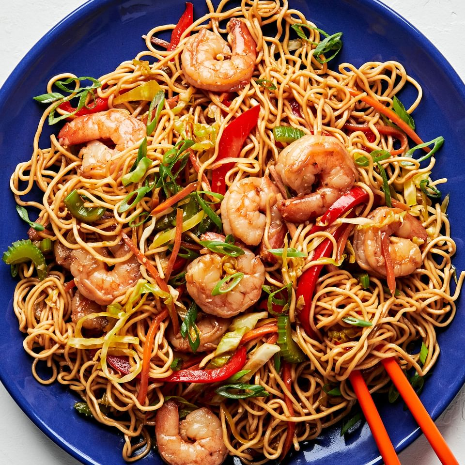
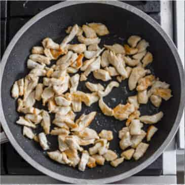
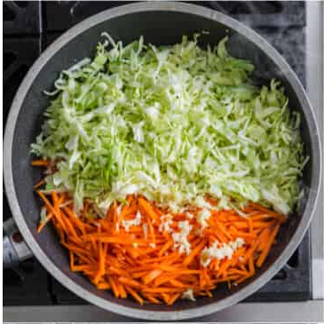
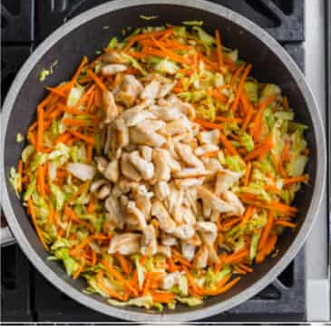
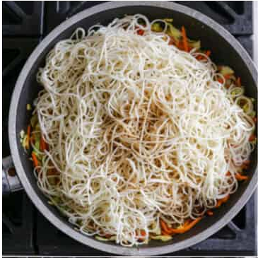
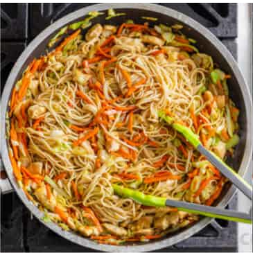
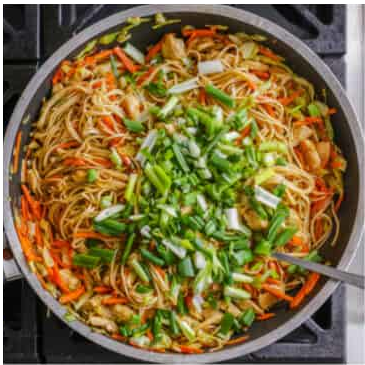

Chicken Chow Mein
Home

Ingredients
- Chow Mein Noodles
- 12 oz chow mein noodles (Uncooked)
- 3tsp oil
- Vegetables
- 2 Cups Cabbage
- 1 Large Carrot (Julienned)
- Green Onions to taste
- 2 Garlic Cloves
- Meats
- 1 lb of Chicken Breast
- Sauce
- 6 tbsp Oyster Sauce
- 3 tbsp Low Sodium Soy Sauce
- 3 tbsp light sesame oil
- ½ Cup chicken broth
- 1 tbsp cornstatch
- 1 tbsp granulated sugar
Recipe
- In a small mixing bowl, combine ingredients for chow mein sauce: oyster sauce, sesame oil, soy sauce, chicken broth, and cornstarch. Set aside.
- Cook noodles according to package instructions, set aside.
- Heat a large wok or pan. Add a bit of oil to the pan and cook chicken until it’s golden brown. Remove chicken and set aside.
- Add carrots, cabbage and pressed garlic and saute for a few minutes until veggies are slightly softened.
- Add chicken back to the pan, followed by cooked noodles and pour the sauce right on top. Cook for about 2 minutes, distributing all that saucy goodness around evenly.
- Add chopped green onions and remove from the heat. Serve hot!
Recipe Source